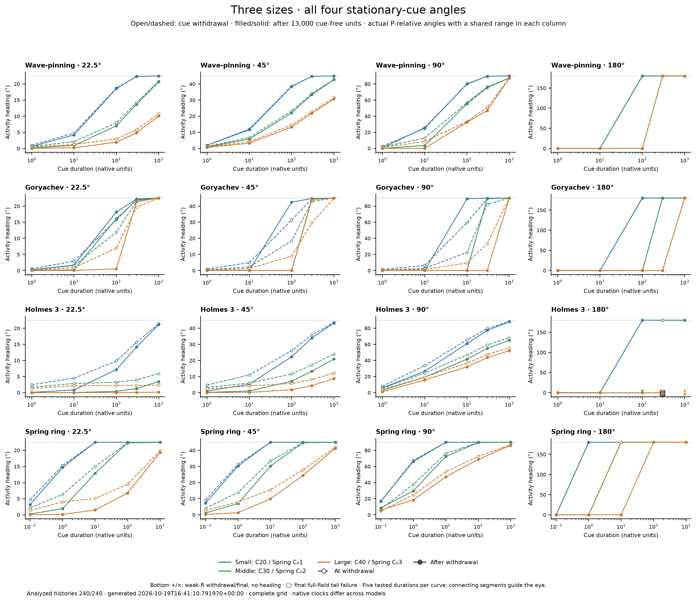

Input snapshot modified 2026-10-19T16:36:37.207735+00:00 · rendered 2026-10-19T16:41:10.791970+00:00 · analyzed 240/240 · producer complete. Opening or manually refreshing loads this snapshot; there is no timed browser refresh.

Definitions and limits · Basal/cue context · Complete expected coverage